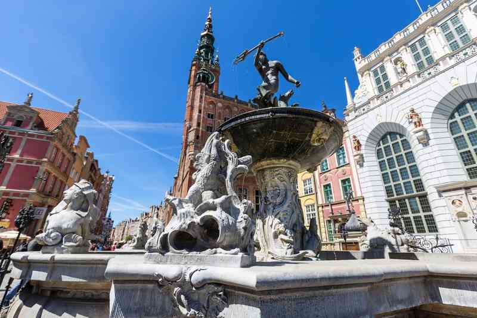
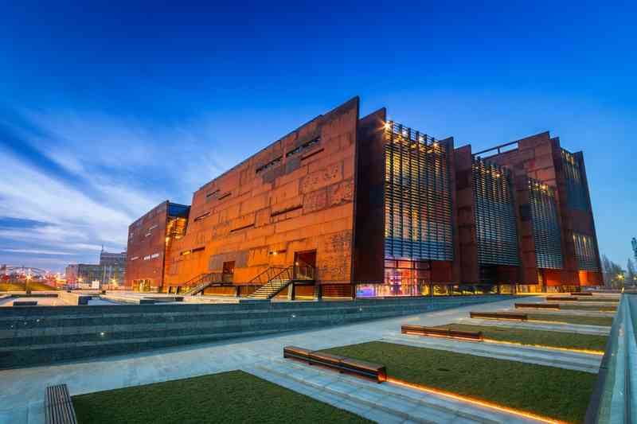
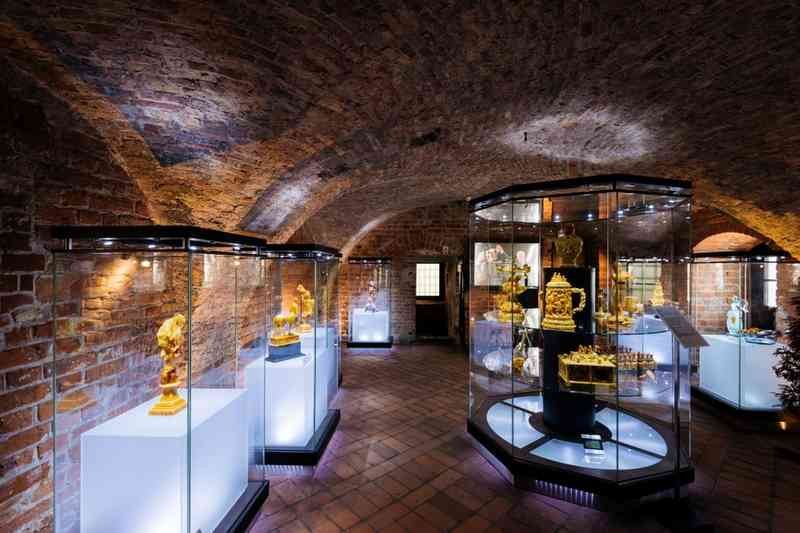

Gdańsk
Cтолица Поморского воеводства. Город в северной Польше, шестой по населению в стране. Вместе с соседними Сопотом и Гдыней образует агломерацию Труймясто — «Трёхградье».
-
Тракт Крулевски (Королевский Путь)
На восток к реке Мотлава между двумя городскими воротами. Вдоль Улица Длуга (Длинная улица), а затем Длуги Тарг (Длинный рынок) Королевский путь впервые получил свое королевское обозначение в 1457 году, когда король Польши Казимир IV Ягеллон вошел в Гданьск. Начиная с запада у Верхних ворот и заканчивая у Зеленых ворот. Но в Długi Targ 44, Artus Court, место встречи Ренессанса и фондовую биржу, в настоящее время филиал Гданьского исторического музея. Королевский тракт – путь, проходящий по улицам Длуга и Длугий Тарг от Золотых ворот до Зеленых. По обе стороны тракта построены каменные дома богатых патрициев. В доме Упхагена (Długa 12) открыт музей мещанских интерьеров (8 PLN, бесплатно по понедельникам с 9:00 до 12:30). Золотой дом (Długi Targ 42) украшен барельефами, статуями и надписями на латыни.
-
Церковь Святой Марии
Эта огромная готическая церковь была основана в 14 веке и имеет объем до 190 000 кубических метров и входит в число трех крупнейших кирпичных церквей мира. Второй по величине в Европе (после Кёльнского собора) и в то же время самый большой кирпичный храм в Европе. Построен в XIII—XVI веках в строгом готическом стиле. Почти полностью сохранился во время штурма города в 1945 году (обвалилась часть сводов, впоследствии восстановленных в бетоне). Стоя в 66-метровом нефе, вам понадобится немного времени, чтобы просто обернуть голову вокруг размеров этого эпического здания, которое может вместить 25 000 верующих. Вы можете просматривать сокровища, такие как астрономические часы 1460-х годов, высокий алтарь, воздвигнутый в 1510-х годах, и изумительный готический камень Пьета, вырезанный в начале 15-го века. Если вы готовы подняться почти на 400 ступеней, вы можете пробиться к вершине монолитной 77,6-метровой главной башни. Мариацкий Костел (Церковь Девы Марии) — второй по величине собор в Европе и самое высокое здание Гданьска. Красивый алтарь, астрономические часы, статуя Гданьской Мадонны. Бесплатный вход с 1 декабря по 1 апреля, в другое время 4 PLN. Билет на смотровую площадку колокольни (6 PLN) включает осмотр костела. По вечерам проходят органные концерты (15/25 PLN).
-

Фонтан Нептуна
На Длинном Рынке, в нескольких шагах от Artus Court, это постоянный символ Гданьска. Фонтан Нептуна - памятник маньеризма, отлитый из бронзы в городе в 1615 году, но он не будет установлен еще 18 лет. Скульптором был Авраам ван ден Блок, родом из нынешнего Калининграда, но с фламандскими родителями. И если вам интересно, фиговый листок на его приватных частях не был в оригинальном дизайне, но был добавлен в реставрацию в 1988 году.
-
Золотой Дом
Находясь на Длинном Рынке, две двери справа от Artus Court - это здание, которое часто называют самым красивым в городе. Благодаря архитектуре маньеризма Золотой дом был создан для Яна Спеймана, мэра Гданьска в начале 17-го века. Дом, спроектированный Абрахамом ван ден Блоке. Но где он выделяется своими скульптурными фризами, 16 бюстами на его пилястрах, представляющих польских королей, и статуями на балюстраде Ахилла, Антигоны, Клеопатры и Эдипа.
-
Главная ратуша
Главная ратуша была разработана командой голландских архитекторов в середине 16 века. Вам придется откинуть голову назад, чтобы увидеть его, но на вершине 83 метров над уровнем улицы находится позолоченная статуя в натуральную величину Сигизмунда II Августа, короля того времени. В Малом Зале Советов, Зале Великого Совета, Белом Зале и Зимнем Зале есть позолоченная лепнина, кессонные потолки, мраморные полы, фрески, скульптуры и гобелены. Вы можете отправиться в смотровую галерею для вертикального обзора города и услышать звон колокольчика из 37 звонков в час. Городская ратуша – исторический музей Гданьска. Мы осмотрели все залы (12 PLN) и поднялись на колокольню (5 PLN). В Большом зале Совета находится знаменитая картина Исаака Ван ден Блока «Гданьский апофеоз». Во дворе Ратуши можно присесть на скамеечку и сфотографироваться на черно-белом фоне старого Гданьска.
-
Улица Мариацка (улица Святой Марии)
Начиная с церкви Святой Марии и продолжая движение на восток к реке Мотлава и воротам Святой Марии, Улица Мариака - это восхитительная булыжная улица, окаймленная узкими купеческими домами с царственными порталами. По адресу Mariacka 1 говорят, что в этом доме летом 1529 года Николай Коперник тайно встречался со своей возлюбленной Анной.
-
Гданьский журавль
Cооружение XV века, сочетавшее в себе несколько функций — городских ворот, оборонительной башни и портового крана. До начала XX века Журав был самым большим портовым краном Европы. Его также использовали для установки мачт на корабли. Журав является одним из символов Гданьска. Портовый кран Журав стоит на берегу Молтавы. Механизм средневекового крана поднимал грузы весом 4 тонны на высоту 11 м. В соседнем здании расположен Морской музей (8 PLN, бесплатно по средам). Наверху ресторан с панорамным видом.
-
Длуги Побжезе (Длинная набережная)
До того, как порт был перенесен в устье реки Мертвой Вислы в 19 веке, на этой набережной проходили все погрузочные и разгрузочные работы в Гданьске. В те времена защита была жизненно важной, и поэтому здесь есть «водные ворота», защищающие вход на каждую улицу, проходящую перпендикулярно реке.
-
Вестерплатте
После войны один из сторожей был восстановлен и превращен в музей, а остальные остались в руинах. На самой высокой точке Вестерплатте также установлен памятник «Береговым защитникам», построенный в 1966 году и состоящий из 236 гранитных блоков высотой до 25 метров.
-

Золотые Ворота
Золотые ворота относятся к 1610-м годам и были подняты, чтобы заменить готические ворота, которые были до. Авраам ван ден Блок, человек, стоящий за фонтаном Нептуна и Золотым домом, придумал дизайн для этой структуры. Ворота имеют балюстраду на крыше, и с обеих сторон четыре аллегорические статуи, представляющие качества идеального гражданина, основанные на классических основных достоинствах: Мир, Свобода, Богатство и Слава на западной стороне, и Гармония, Справедливость, Благочестие и Благоразумие с видом на Лонг-стрит.
-
Олива Катераль
У входа есть торжественный барочный портал 1688 года, под двумя узкими башнями высотой 46 метров каждая.. Неф, алтарь и 23 алтарей украшены картинами выдающихся художников Гданьска в 17 веке. Есть два главных алтаря, один «Старый» в стиле позднего голландского ренессанса с 1605 года, а другой «Новый» с 1688 года, который считается лучшим произведением искусства барокко в Померании.
-

Европейский центр солидарности
Солидарность была профсоюзным движением и движением гражданского сопротивления, основанным на верфи имени Ленина в 1980 году и возглавляемым будущим президентом Лехом Валенсой. Центр был открыт в 2007 году, а его ржавый фасад указывает на индустриальное начало Солидарности.
-

Музей янтаря
У этой Тюремной Башни, затмевающей Золотые Ворота, есть музей, рассказывающий об отношениях Гданьска с этим драгоценным камнем. Месторождения янтаря в Прибалтике являются самыми богатыми в мире, и янтарь способствовал развитию экономики города после того, как в 1472 году была образована гильдия для этого драгоценного камня. Первый в Польше музей янтаря документирует эту историю.
-
Пляж Желитково
После дня или двух на улицах Гданьска вы можете быть готовы отдохнуть на пляже на Балтике в течение дня. Ближайший находится на набережной района Желитково к северо-западу от Старого города. Этот пляж имеет чистую ленту из мелкого песка, подкрепленную цепью парков и изгибаясь на несколько километров вверх по побережью на запад.